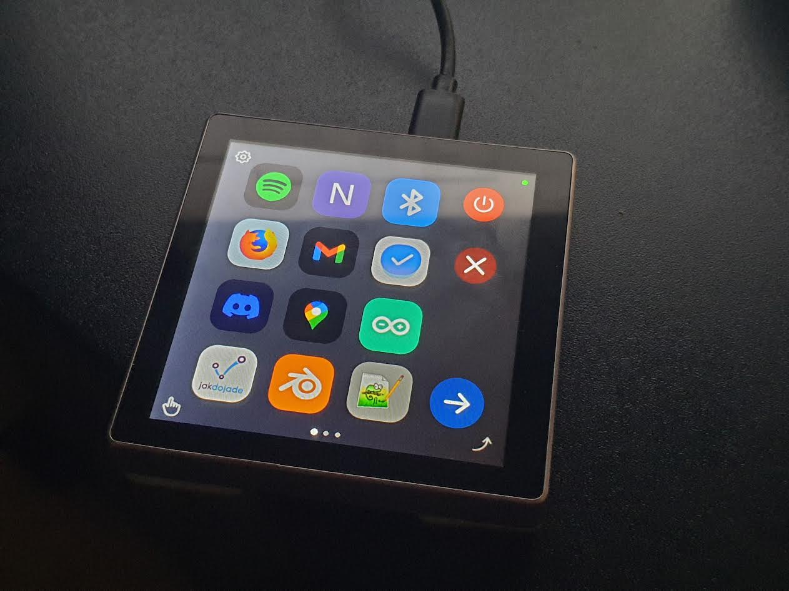

Makropad - firmware i software
ESP32-4848S040

Podłącz makropad kablem USB i kliknij przycisk. Przeglądarka sama wgra najnowszy firmware — bez Arduino IDE i bez instalowania czegokolwiek.
Krok po kroku
- Zamknij aplikację Makropad Projektant (i monitor portu w Arduino IDE). Port USB może mieć tylko jednego właściciela naraz.
- Podłącz makropad kablem USB z przesyłem danych — kabel tylko do ładowania nie wystarczy.
- Kliknij Wgraj firmware i wybierz port makropada z listy (zwykle „USB JTAG/serial debug unit” albo port
COM). - W oknie, które się pojawi, wybierz Install Makropad. Wgrywanie trwa około minuty — nie odłączaj kabla.
- Po zakończeniu makropad uruchomi się sam z nowym firmware. Ekran mignie dwa razy — to celowy, pełny restart, po którym Bluetooth startuje od nowa.
Jeśli pojawi się pytanie „Erase device”, zostaw je niezaznaczone — wtedy ekrany, ikony, tło i gesty zapisane na urządzeniu zostają. Zaznacz je tylko wtedy, gdy chcesz wyczyścić urządzenie do zera (np. gdy po aktualizacji nie chce się poprawnie uruchomić).
Coś nie działa?
- Na liście nie ma żadnego portu
- Spróbuj innego kabla lub gniazda USB. Na Windowsie sprawdź w Menedżerze urządzeń → „Porty (COM i LPT)”, czy port się pojawia po podłączeniu.
- „Failed to connect” albo wgrywanie nie startuje
- Odłącz makropad, przytrzymaj przycisk BOOT na płytce, podłącz kabel, puść przycisk i spróbuj jeszcze raz. Po wgraniu odłącz i podłącz kabel ponownie, żeby urządzenie wystartowało normalnie.
- Po wgraniu kropka Bluetooth miga na czerwono
- Odłącz kabel USB na kilka sekund i podłącz ponownie. Jeśli komputer nadal się nie łączy, usuń makropad z listy urządzeń Bluetooth w systemie i sparuj go jeszcze raz.
- „Failed to open serial port” / port zajęty
- Port trzyma inny program — zamknij Makropad Projektant, Arduino IDE i inne karty z panelem makropada.
Aplikacja Makropad Projektant
Program na komputer do projektowania ekranów, przycisków i gestów oraz wysyłania ich na makropad.